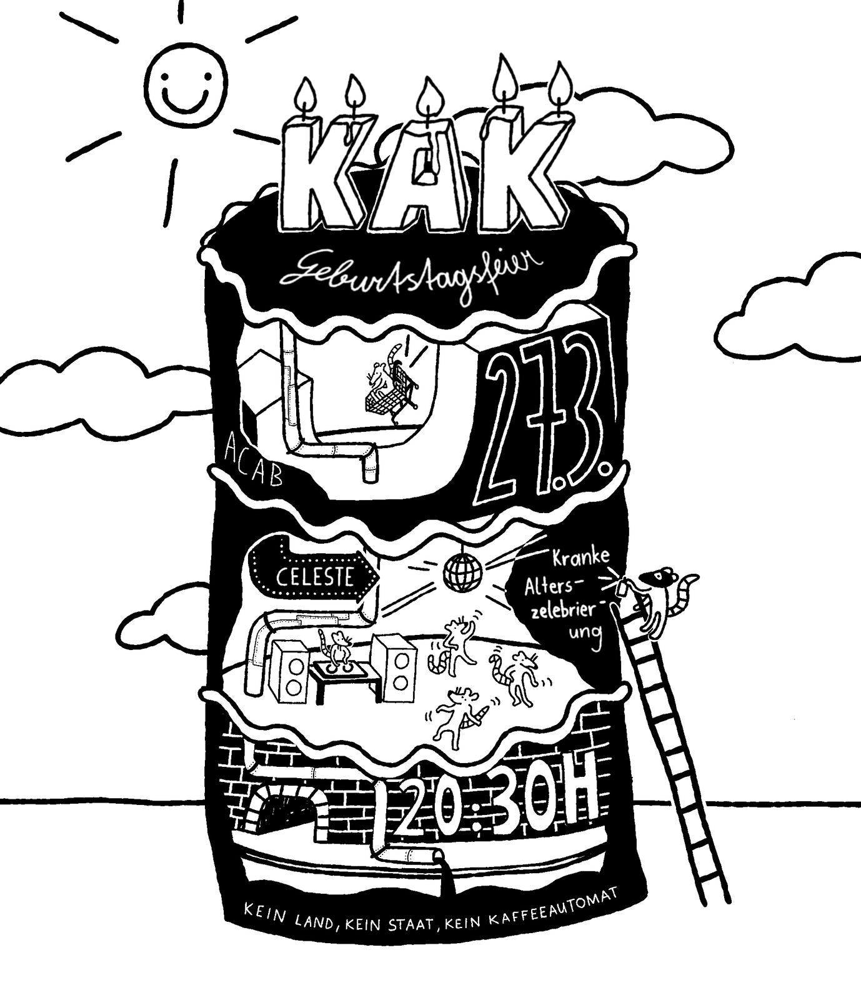

Next KaK: 27.03.26 20:30h Celeste (Hamburgerstraße 18, 1050 Wien)

Krach am Kanal (KaK)
Krach am Kanal ist ein Format von Studierenden der Universität für angewandte Kunst und Soundbegeisterten, die einen Raum für Soundarbeiten, Noise, Krach, Jamming, Improvisation, Dj’s, Musik und Geräusche jeglicher Art gesucht haben. Da hörbasierte Arbeiten häufig wenig Platz/Gehör bekommen, wollen wir eine Plattform für diese Kunst schaffen und sie im öffentlichen Raum zeigen. Dafür versammeln wir uns einmal im Monat – unter anderem am Donaukanal – und legen auf, performen live oder spielen Musik. Das Wichtigste dabei: gehört werden!